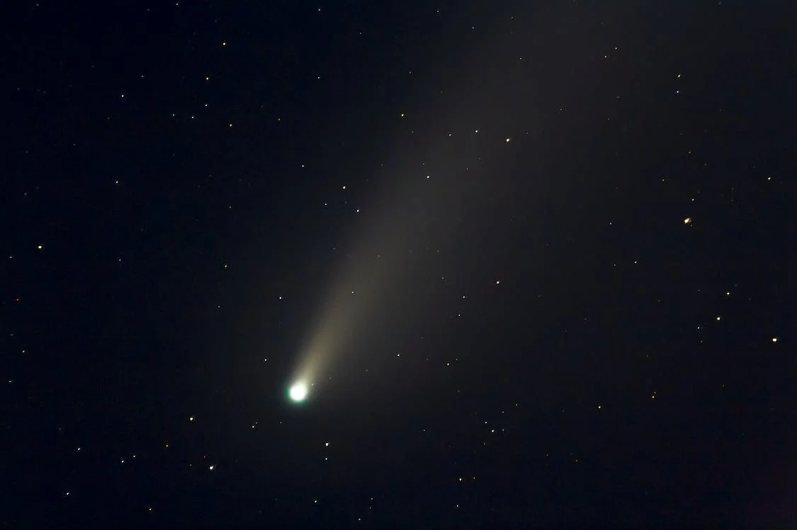

Comets, those captivating celestial bodies, have long mesmerized humanity with their awe-inspiring beauty and enigmatic nature. These cosmic wanderers, composed of ice, dust, and organic compounds, ignite a sense of wonder in the night sky. As they journey through the depths of space, comets captivate both amateur stargazers and seasoned astronomers alike. With their graceful tails and shimmering nuclei, comets provide a breathtaking spectacle, inviting us to contemplate the mysteries of the universe.
Comets follow elongated orbits that bring them from the frigid outskirts of the solar system into the inner regions, where they become visible to us Earthlings. As they approach the Sun, the intense heat causes the icy nucleus of a comet to vaporize, releasing gas and dust into space. This outgassing creates the stunning coma, or the glowing envelope, around the nucleus, which can span thousands of kilometers. The comet's tail, composed of ionized gases and dust particles, extends away from the Sun, influenced by solar radiation and the solar wind, creating a mesmerizing spectacle visible to us from Earth..

The study of comets provides invaluable insights into the origins of our solar system. Comets are often referred to as "time capsules" since they contain preserved remnants from the early stages of the solar system's formation. By analyzing the composition and structure of comets, researchers can uncover clues about the building blocks that gave birth to planets and other celestial bodies. Cometary missions, such as the Rosetta spacecraft, have allowed scientists to study comets up close, revealing their complex and diverse nature, and unraveling the mysteries of these ancient remnants from the dawn of our cosmic neighborhood.
Comets have also played a significant role in shaping human culture and mythology throughout history. Ancient civilizations perceived comets as divine omens, associating their appearance with significant events or impending doom. These cosmic visitors have sparked imagination and inspired artistic expressions across various cultures, leaving their mark on literature, poetry, and folklore. Today, comets continue to ignite our curiosity and fascination, reminding us of our small place in the vastness of the universe and the ongoing exploration that lies ahead. The cosmic wanderers, those ethereal streaks in the night sky, beckon us to look upward, to dream, and to marvel at the wonders that lie beyond our earthly confines.